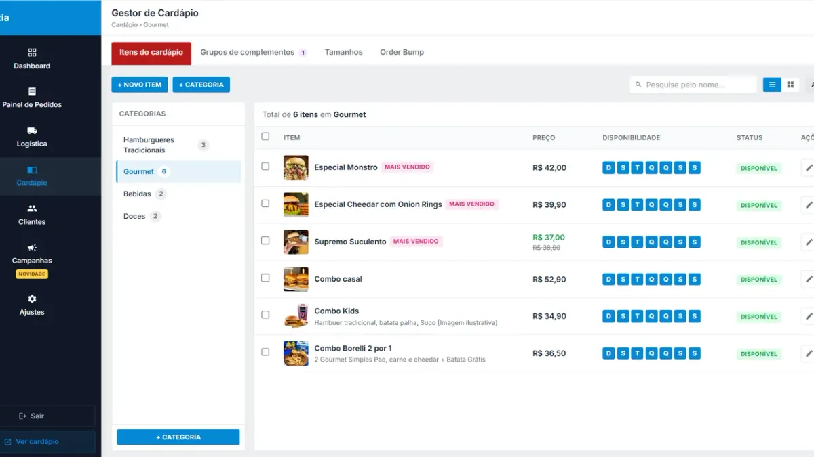

Como calcular o CMV do restaurante e do delivery (fórmula, ficha técnica e exemplos)

CMV (Custo da Mercadoria Vendida) é quanto você gastou em insumo para produzir o que vendeu. É o maior custo do restaurante depois da folha — e o que mais escapa do controle, porque desperdício, porção generosa e aumento do fornecedor não aparecem no caixa até o mês fechar no vermelho.
A fórmula do CMV
CMV = Estoque inicial + Compras do período − Estoque final
CMV % = CMV ÷ Faturamento × 100
Exemplo mensal
| Item | Valor |
|---|---|
| Estoque no dia 1º | R$4.000 |
| Compras no mês | R$12.000 |
| Estoque no dia 30 | R$3.500 |
| CMV | R$12.500 |
| Faturamento | R$38.000 |
| CMV % | 32,9% |
Só entram insumos de produção (carne, pão, queijo, bebida para revenda). Embalagem costuma ser controlada à parte no delivery; aluguel, gás e salário são despesas, não CMV.
Qual o CMV ideal?
A referência de mercado para food service fica, em geral, entre 25% e 35% do faturamento — varia com o segmento (pizza e açaí tendem a ficar mais baixos, carnes e frutos do mar mais altos). Mais importante que o número médio é a tendência: CMV subindo mês a mês sem aumento de preço do fornecedor é sinal de desperdício, porção fora do padrão ou desvio.
CMV teórico: a ficha técnica
O CMV do estoque diz quanto você gastou. A ficha técnica diz quanto deveria ter gasto. Exemplo de um X-bacon:
| Insumo | Quantidade | Custo |
|---|---|---|
| Pão brioche | 1 un | R$1,60 |
| Blend 150 g | 150 g | R$5,40 |
| Queijo cheddar | 2 fatias | R$1,20 |
| Bacon | 30 g | R$1,50 |
| Molho, salada | — | R$0,80 |
| Custo do lanche | R$10,50 |
Vendido a R$34, o CMV do item é 30,9%. Se o CMV real do mês (pelo estoque) está bem acima da média das fichas, a diferença é perda — e dá para caçar onde.
Como usar o CMV para precificar
Preço = custo do prato ÷ CMV-alvo. Para um custo de R$10,50 e alvo de 30%: R$10,50 ÷ 0,30 = R$35. Depois ajuste ao mercado. Itens de margem alta (batata, bebida, adicionais) compensam itens de CMV alto — por isso order bump e adicionais aumentam a margem, não só o ticket.
O custo que o CMV não mostra: comissão
Um lanche de R$34 com CMV de 30% deixa R$23,80 de margem bruta. Se esse pedido vem por aplicativo com comissão de 12% a 27% (dependendo do plano e da forma de pagamento), saem mais R$4,08 a R$9,18 — e, no plano completo, a margem cai quase 40% antes de pagar aluguel e equipe. Por isso o CMV precisa ser lido junto com o custo de canal. Faça a conta em cardápio digital sem comissão e veja quanto custa cada modelo em preço de cardápio digital.
Rotina para controlar o CMV
- Ficha técnica de todos os itens, revisada quando o fornecedor muda preço.
- Contagem de estoque no mesmo dia todo mês (os itens caros, toda semana).
- Porcionamento padronizado: balança e medida, não "olhômetro".
- Registro de perdas (queimou, venceu, caiu no chão).
- Comparar CMV real × teórico todo mês, junto com o fechamento de caixa e o relatório de itens mais vendidos.
Perguntas frequentes
Como calcular o CMV de um restaurante?
CMV = estoque inicial + compras do período − estoque final. Para ter o percentual, divida o CMV pelo faturamento do mesmo período e multiplique por 100.
Qual o CMV ideal para restaurante e delivery?
A referência de mercado costuma ficar entre 25% e 35% do faturamento, variando por segmento. Acompanhar a tendência mês a mês é tão importante quanto o número.
Embalagem entra no CMV do delivery?
Muitos restaurantes controlam a embalagem separada do CMV de alimentos, como custo variável do delivery. O importante é manter o mesmo critério todo mês para comparar.
Qual a diferença entre CMV real e teórico?
O real vem da contagem de estoque e das compras; o teórico vem da ficha técnica multiplicada pelas vendas. A diferença entre os dois mostra desperdício, porcionamento errado ou desvio.
Pare de pagar comissão por pedido
Tenha seu cardápio digital próprio por R$67/mês fixo. Nós configuramos pra você e damos todo o suporte técnico.
Criar Meu Cardápio Agora →